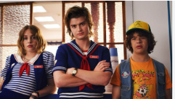

Загальна інформація
Стів Гаррінґтон — один із головних героїв популярного серіалу Netflix «Дуже дивні справи» (Stranger Things), який зіграв Джо Кірі, відомий своєю трансформацією від типового школяра-хулігана до турботливого «дядька-няні» для молодших героїв, завоювавши любов фанатів. Спочатку він був частиною повторюваного складу, але став основним актором, перетворившись з побічного антагоніста на одного з найулюбленіших персонажів, який захищає інших від монстрів з «Дзеркального світу» (Upside Down).
Дізнатись більшеДрузі персонажа:
Друзі Стіва Гаррінгтона відіграють важливу роль у його житті, зокрема Дастін і Робін:
- Дастін — розумний, дотепний і щирий хлопець, який часто дивує Стіва своєю кмітливістю та оптимізмом, а їхні дружні жарти й взаємна підтримка роблять їхній зв’язок по-справжньому теплим;
- Робін же — смілива, іронічна та надзвичайно розумна, вона швидко стає для Стіва не лише напарницею у пригодах, а й близькою подругою, яка допомагає йому краще зрозуміти себе і світ навколо.